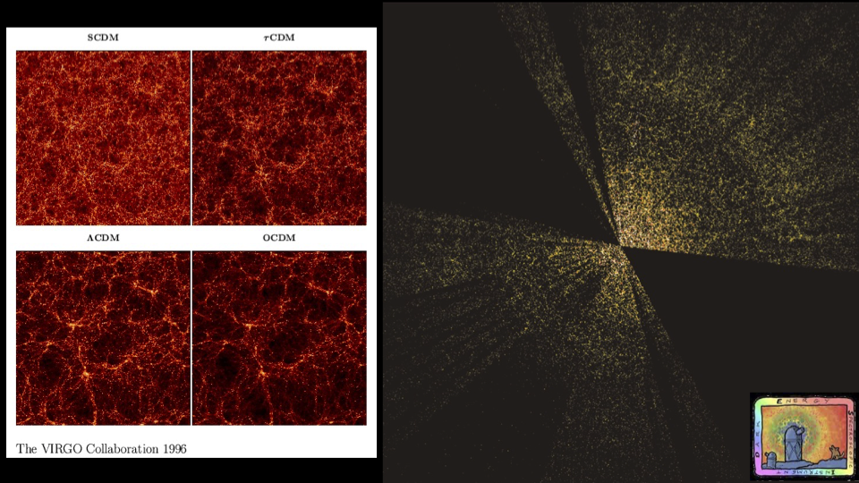

Research
My research lies at the intersection of cosmology and galaxy formation. I am interested in novel modeling techniques and cosmological probes that will allow us to fully take advantage of the wealth of data contained in upcoming galaxy surveys and further our understanding of structure formation in the Universe.

In my research I use a combination of large high-resolution N-body simulations, models of the galaxy-halo connection, and galaxy surveys to study the clustering of galaxies and the formation of structure in the Universe over time. My goal is to ultimately use small-scale galaxy clustering to probe and constrain both cosmology and the galaxy-halo connection. Small scales contain rich information about the growth of structure in our universe, as well as the processes that govern galaxy formation and evolution. Current and future galaxy surveys will map out the positions of galaxies in the Universe with greater precision than ever before. However, in order to take advantage of these precise observations and learn about the fundamental physics that governs structure formation, we need two things: large high-resolution simulations of the growth of dark matter halos in the Universe, and accurate models of the relationship between these dark matter halos and galaxies.
 I am a Postdoctoral Fellow in the Cosmological Physics & Advanced Computing Group at Argonne National Laboratory. My current work focuses on building a novel forward model of the galaxy-halo connection for creating multi-wavelength, multi-tracer, multi-redshift mock galaxy catalogs. As part of this work, I am leading the Emulator Mock Challenge within the DESI Collaboration.
I recently completed my PhD in Astrophysics at Vanderbilt University with Andreas Berlind. (Take a look at my academic genealogy, which includes Subramanyan Chandrasekhar and Niels Bohr!)
My thesis work focused on accurately modeling the small-scale clustering of galaxies in SDSS using a wide variety of galaxy clustering statistics and an extended version of the standard Halo Occupation Distribution model. My dissertation is titled "Developing an Accurate Probe of the Galaxy-Halo Connection: Baryonic Effects, Small-Scale Galaxy Clustering, and Halo Model Extensions." As part of this work, I investigated the limitations of Halo Occupation Distribution modeling compared to hydrodynamic simulations, as well as halo mass discrepancies between dark matter only and hydrodynamic simulations. For this work I made use of results from the Illustris, IllustrisTNG, and EAGLE simulations. A python module to implement the halo mass corrections presented in Beltz-Mohrmann & Berlind (2021) can be found here.

As a graduate student, I served as the Allocation Manager for the Large Suite of Dark Matter Simulations (LasDamas) Project on XSEDE from 2017-2022. I have substantial experience running cosmological N-body simulations using the GADGET-4 simulation code, as well as generating initial conditions with 2nd order Lagrangian Perturbation Theory (2LPTic), identifying halos with ROCKSTAR, and running large parameter searches with MCMC.
Recent Talks
Cosmology Talks miniworkshop: Cosmology Beyond 2pt Statistics, August 2024 (invited expert)
DHWFEST, University of Utah, July 2024
Summer DESI Meeting, Marseille, France, July 2024
New Strategies for Extracting Cosmology from Galaxy Surveys, July 2024
Fundamental Physics from Future Spectroscopic Surveys, May 2024
Winter DESI Meeting, Hawaii, USA, December 2023
Building a physical understanding of galaxy evolution with data-driven astronomy, Kavli Institute for Theoretical Physics, UC Santa Barbara, January 2023
CAMELS Workshop, Center for Computational Astrophysics, December 2022
N-Body Shop Workshop, Center for Computational Astrophysics, June 2022
The Galaxy‑Halo Connection Across Cosmic Time - Recent Updates, Kavli Institute for Theoretical Physics, UC Santa Barbara, August 2020
Mock Innsbruck: The Connection Between Galaxies and Dark Matter Haloes, Universitaet Innsbruck, March 2020
First Shanghai Assembly on Cosmology and Galaxy Formation, Shanghai Jiao Tong University, November 2019
Santa Cruz Galaxy Workshop, UC Santa Cruz, August 2019
Membership
I am a member of the Dark Energy Spectroscopic Instrument Collaboration, the LSST Dark Energy Science Collaboration, The N-Body Shop Collaboration, the CAMELS Collaboration, and the American Astronomical Society.